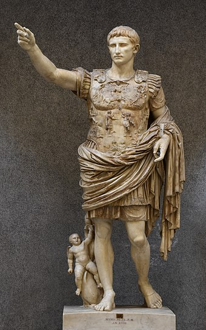

Transition from Republic to Empire
Rome had begun expanding shortly after the founding of the Roman Republic in the 6th century BC, though not outside the Italian Peninsula until the 3rd century BC. Thus, it was an "empire" (a great power) long before it had an emperor. The Republic was not a nation-state in the modern sense, but a network of self-ruled towns (with varying degrees of independence from the Senate) and provinces administered by military commanders. It was governed by annually elected magistrates (Roman consuls above all) in conjunction with the Senate. The 1st century BC was a time of political and military upheaval, which ultimately led to rule by emperors.The consuls' military power rested in the Roman legal concept of imperium, meaning "command" (typically in a military sense). Occasionally, successful consuls or generals were given the honorary title imperator (commander); this is the origin of the word emperor, since this title was always bestowed to the early emperors
